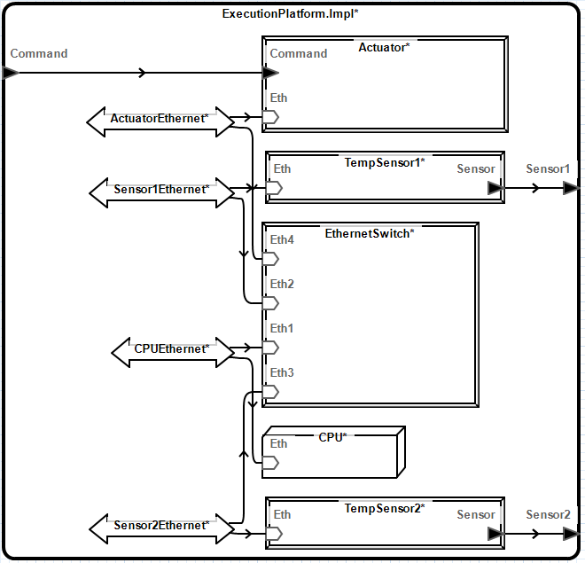
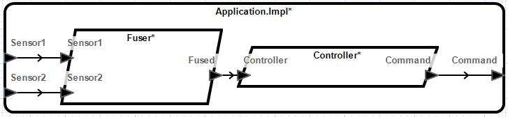

This tutorial will show the basic functionality of using the graphical editor. In this tutorial we will create a simple model of an alarm system. The alarm system will consist of a controller which receives data from a single door sensor and controls an alarm.


This tutorial will show more advanced features of the graphical editor. These features include binding configuration and visualization, setting and viewing AADL properties, and system instantiation. In this tutorial we will create a simple climate control system which controls an actuator based on the state of two temperature sensors. Our model will be divided into execution platform components and software components.
See section 1 for an introduction to the basics.
Start by creating an AADL project named “ClimateControl”.
We will begin by defining the execution platform. The execution platform will consist of a two sensors, an actuator, a CPU, and an Ethernet network.

Create a new AADL Package
Start by creating a new package named “Hardware” and open with diagram editor.
Create Classifiers

Set AADL Properties AADL properties can be assigned to model elements using the AADL Property Values view while editing a diagram in the same way it can be used when using the textual editor.


Show AADL Properties on Diagrams AADL properties can be shown on the diagram.
Open Implementation Diagram
Open the ExecutionPlatform.Impl implementation diagram.
Create Subcomponents

Create Connections

Next, we will model the software application. The application will consist of two processes. One process will process data from both sensors and produce a single output. The other process will be responsible for sending commands to the actuator.

Create Package
Create a package named “Software” and open with diagram editor.
Create Classifiers


Create Subcomponents and Connections
Now that we will define an integrated system which contains both the execution platform and the software application. Then we will bind the application to the CPU.
Create Package
Create a package named “Integration” and open with diagram editor.
Create System Classifiers
Create a system type and implementation named “ControlSystem” and “ControlSystem.Impl”, respectively, that contains:
Create Processor Binding (See section 4.7)
Create a Processor Binding Diagram A Processor Binding Diagram is a type of diagram which is preconfigured to visualize the bindings. For more information about diagram types, see section section 7.1. Create the diagram using the following steps.

Most elements are created by selecting the desired element from the palette and placing it on the diagram.
Select the desired implementation from the palette and place it on the diagram or on an eligible type.
Select Mode Transition from the palette and select the starting mode then the ending mode.
When editing a component implementation, flow implementations and end-to-end flow specifications can be created graphically by selecting the Create Flow Implementation and Create End-To-End Flow Specification tools from the toolbar and following the prompts to select a series of elements from the diagram or outline view. The dialog and colors of elements in the diagram will update as valid selections are made. The starting flow specification will be highlighted dark orange and flow elements will be highlighted purple. The Undo button will remove the elements in the order they were selected.
Select Create Flow Implementation from the toolbar, the dialog will appear.


Select Create End-To-End Flow Specification from the toolbar, the dialog will appear.


When viewing a thread implementation diagram, subprogram call sequences can be created.

When viewing a thread implementation diagram that contains a subprogram call sequence, a subprogram call can be added to the sequence.

The properties sheet contains properties for the currently selected diagram elements. The properties sheet can be opened by double-clicking on a diagram element in the diagram or in the outline. Alternatively, the properties sheet can be opened by right-clicking on a diagram element in the diagram or outline and selecting Properties… from the context menu.
Elements can be renamed three ways:
Elements can be deleted three ways:
To allow for easier editing, the editor allows editing classifiers in the context of related model elements. For example, a data port may be created inside a component implementation. Since AADL component implementations cannot contain data ports, the data port will be created inside the component implementation’s type (See section 8.1). In cases where there are multiple potential classifiers to edit, the editor will prompt to select a classifier.
A mode can be designated as the initial mode by using the AADL tab of the Properties view (See section 4.1), and using the Initial section option.
A mode can be designated as the initial mode by using the AADL tab of the Properties view (See section 4.1), and using the Dimensions section options.
| Menu Item | Description |
|---|---|
| Add | Shows the Modify Dimension dialog to create a dimension. |
| Modify… | Shows the Modify Dimension dialog to make modifications to the selected dimension. |
| Delete | Deletes the selected dimension. |
| Up and Down | Changes the order of the dimensions. |
When viewing a component implementation diagram, a binding property associations can be created using the toolbar. 
When editing a component implementation, flow implementations and end-to-end flow can be edited using the flow editor. The flow editor can be accessed by double-clicking the component implementation, selecting the AADL tab in the Properties view, and selecting Edit… from the Flows section.
Appropriate elements can be refined by using the AADL tab of the Properties view (See section 4.1), and using the Refined section option.
The modes in which the selected elements are active can be specified selecting the AADL tab of the Properties view (See section 4.1), and using the In Modes section options.
The subprogram call’s order in the subprogram call sequence (See section 3.4) can be changed from the AADL tab of the Properties view (See section 4.1), and using the Call Order section options.
To select a diagram element’s container, right click on the child element and select Select Container from the context menu.
All connections can be selected by selecting Edit->Select All Connections.
Component implementations can be instantiated by right-clicking the implementation on the diagram or Outline view and selecting Instantiate from the context menu. The instance model will be created in that projects instances folder in the AADL Navigator.
Portions of a diagram can by copied and pasted using the menu items described in table 1.
Configuring a diagram allows customizing the contents of the diagram (See section 8.3). To configure a diagram, right-click in the diagram or an element in the Outline view and select Configure Diagram…. The diagram configuration dialog allows selecting which elements should appear in the diagram.
The diagram configuration dialog also allows selecting which AADL properties will be included in the diagram. The communication_properties::timing property is implicitly enabled and is represented by specialized graphical indicators. Delayed connections have a double bar indicator in the middle. Immediate connections have a double arrow in the middle.
Connections which are manually enabled will be removed if the connection ends are not also included in the diagram. Connections that have one connection end visible on the diagram are represented as abstracted connections. (See section 8.4)
The Hide Connection Labels option can be used to set the default visibility of labels for connections between diagram elements. Label visibility for individual elements can be controlled using the properties view described in section 3.1.16.
When creating a diagram, a type must be specified. A diagram’s type determines the default contents of elements added to a diagram. The contents of elements are not updated as new elements are added to the model. The diagram type also determines which AADL properties are enabled by default. All diagram types are equally customizable.
| Diagram Type | Availability | Default Contents | Properties |
|---|---|---|---|
| Custom | Packages, Classifiers, System Instances, and Contextless | None | None |
| Package | Packages, Contextless |
|
None |
| Structure | Classifiers and System Instances |
|
None |
| Mode | Component Classifiers |
|
None |
| Processor Binding | Component Implementation and System Instances |
|
Deployment_Properties::Actual_Processor_Binding |
Menu options available in a diagram element’s context menu can be used to show and hide contents of a selected element. Access the context menu by right-clicking on a diagram element in the diagram or in the outline.
By default, the Outline view shows hidden elements. Hidden elements are those which are not currently included in the diagram. Hidden elements are greyed out in the outline. Whether hidden elements are shown in the Outline view can be toggled using the Show Hidden Elements menu item in the view menu ( ). When displayed, hidden elements can be added to the diagram using the Show menu item which is available in the context menu.
). When displayed, hidden elements can be added to the diagram using the Show menu item which is available in the context menu.
Elements that are directly connected to a subcomponent or feature can be shown by right-clicking on the subcomponent or feature and selecting Show Connected Elements from the context menu.
The following sections describe the diagram visualization capabilities of the graphical editor.
Elements which are inherited from another model element have a gray color. This indicates that any changes made to the model element will result in a change to model element other than the one in which it is contained in graphically.
The appearance of diagram elements can be edited by using the Appearance tab of the Properties view (See section 4.1). - The Label Visibility option allows hiding or showing the diagram element’s label. - Font size can be edited by selecting the font size drop-down menu. - Line width can be edited by selecting the line width drop-down menu. - Elements can be displayed as an image by selecting the set image button, selecting Select…, and then selecting the desired image. Only images contained in referenced projects may be selected. To reference other projects, edit the project’s properties. Whether an element is displayed as an image or using standard notation can be toggled by selecting the Show as Image check box. The editor supports the following image file types: bmp, png, jpg, gif. - Outline color can be edited by clicking the outline button and selecting the desired color. - Font color can be edited by clicking the font color button and selecting the desired color. - Background color can be edited by clicking the background color button and selecting the desired color.
Diagram elements which have children that are hidden have an asterisk appended to their labels.
In some cases a connection between diagram elements will be represented by a dotted connection. This indicates that the connection is an abstraction of one or more AADL model elements. A tooltip will provide additional information about the abstracted model elements. Cases in which this occurs are listed below.
Selecting a Flow Implementation or End-to-End Flow specification from the flow drop-down in the toolbar will highlight the flow. Flow Implementations and End-to-End Flows that have no segments and missing segments are marked with an empty tag (E) or a partial tag (P), respectively.
Selecting the “Show” button on the toolbar shows the missing flow segments of the currently selected flow drop-down Flow Implementation or End-to-End Flow when it is marked empty (E) or partial (P).
Selecting a Mode or Mode Transition from the mode drop-down in the toolbar will highlight the in mode elements in the diagram.
Right clicking a Mode or Mode Transition and selecting the “Show In Mode Elements” will show the elements within the mode’s container which are active in the selected mode.
Select the element to be moved.
Press the . key.
Using the Arrow keys, move the element to desired location.
Press the Enter key.
If a a model element is renamed from the AADL text editor without using the Rename Element menu option, the diagram element may disappear from diagrams in which it appears. In such cases it is possible to restore the diagram elements using the following steps. Note: if the diagram is saved after the diagram elements disappears, it will not be possible to restore the missing diagram elements.
The graphical editor supports several methods for navigating between diagrams.
Diagrams may be associated with an existing model element such as an AADL package or classifier. Diagrams which are not associated with a specific model element may also be created. Such diagrams are referred to as contextless diagrams and may contain multiple AADL packages. An AADL model element may have multiple diagrams associated it.
Diagrams can be opened by right clicking on the AADL diagram in the AADL Navigator view and selecting Open from the context menu.
Diagrams that are related to an element can be opened by right clicking the desired element from the Outline view and using the Open sub-menu of the context menu.
Instance model diagrams (See section 5) can be opened by right clicking on the AADL instance model in the AADL Navigator view and selecting Open Diagram from the context menu. The instance model may not be modified using the graphical editor.
The AADL Diagrams view shows the diagrams contained in the workspace. To open the AADL Diagrams view:
By default, the AADL Diagrams view will group diagrams by the diagram type and the diagram’s context. Grouping can be customized using the Group By Type and Group by Context options in the view menu ( ) for the AADL Diagrams view. Selecting Show Decorations from the view menu will toggle display of the context and type for diagrams which are not grouped.
) for the AADL Diagrams view. Selecting Show Decorations from the view menu will toggle display of the context and type for diagrams which are not grouped.
Diagrams are associated with model elements. Moving a model element between packages or renaming it or any of its containers from the AADL text editor without using the Rename Element menu option will break its association with diagrams.
When opening a diagram, the Missing Diagram Context dialog will appear if the graphical editor is unable to find the model element associated with a diagram for any reason. If the element has been previously renamed, select the new name for the element and select OK.
The following sections describe the diagram layout capabilities of the graphical editor.
Layout menu items are available from the Edit->Layout menu or by right clicking on the diagram or diagram element and using the Layout sub-menu. The behavior of the layout menu items are described in table 4.

The preferences dialog contains preferences which affect the layout behavior of the graphical editor. To edit layout preferences:
Select Window->Preferences
Select OSATE->AADL Diagram Editor
Modify the preferences as desired.

When an element has been added to the diagram and needs to be positioned or sized, an incremental layout is performed. The behavior of the incremental layout can be configured by selecting a mode from the preferences dialog. From the preferences dialog select the desired Incremental Layout Mode. The modes are described in table 5.
| Mode | Description |
|---|---|
| Diagram | Each time the editor needs to position or size an element, a layout will be performed on the entire diagram. User adjustments to the diagram layout will be replaced. This reduces the amount of user control over the layout. |
| Container | When an element is found that has neither a size or position, a layout is performed on the diagram element’s container. Any manual layout information in the diagram element’s container will be replaced. If the shape is created and positioned using the palette, the layout will only be performed on the contents of the new element. If a connection is created using the palette, the layout will be performed on the connection’s container. |
| Contents | This is the default setting. A layout is performed on the contents of any element which does not have a size or position. This option is the least disruptive to the existing layout. However, new elements may overlap with existing elements. The Layout Contents menu item can be used to manually layout the contents of a container as needed. If a feature is added, it will be positioned after other features on the appropriate edge. If none of the siblings of an element have a position or size, then the layout will be performed on the container instead. This is done to provide a better layout in cases when an element does not have a user specified layout. |
When the Layout Features Based on Direction preference is enabled, the graphical editor will position ports based on the feature’s direction. Input features will be placed on the left side and output features will be placed on the right side. If the preference is disabled, the layout algorithm will decide the side on which to place the feature.
The following sections describe the graphical editors support for annotations and AADL documentation.
Diagrams can be annotated using the tools available in the Annotation section of the palette. The Note option allows adding text notes to the diagram. Notes are part of the diagram and are not part of the AADL model. The Note Reference option can be used to associate a note with another element in the diagram.
AADL comments which begin with an extra hyphen are displayed by the diagram editor. They are displayed in the tooltips for the corresponding diagram element. Such comments are also displayed in the Documentation section of the Properties view. They cannot be modified using the graphical editor.
The following section contains solutions to known issues as well as instructions for reporting problems with the graphical editor.
After opening or closing AADL source files, the undo and redo commands in the graphical editor are disabled. To workaround, either open the AADL source files before making changes or undo or redo operations as necessary before opening AADL source files.
Project->Build Automatically must be enabled. If it is not enabled, the graphical editor will not function properly.

To ensure diagrams have a consistent appearance across machines, the graphical editor attempts to produce consistent text sizes regardless of system settings. However, due to limitations in the underlying libraries on which the graphical editor relies, this is not always possible. On windows systems, the graphical editor produces consistent font sizes at 100%, 125%, and 200% system text scaling levels.
See section 8.10.
Issues should be reported using the OSATE Issue Tracker.
Development of portions of the OSATE Graphical Editor was sponsored by the Government of the United States under Contract Number FA8702-15-D-0002.
The view, opinions, and/or filings contained in this material are those of the author(s) and should not be construed as an official position, policy, or decision of the Government of the United States or Carnegie Mellon University or the Software Engineering Institute, unless designated by other documentation.